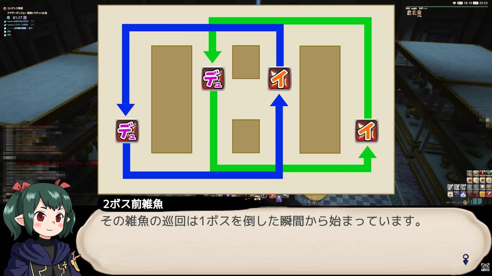
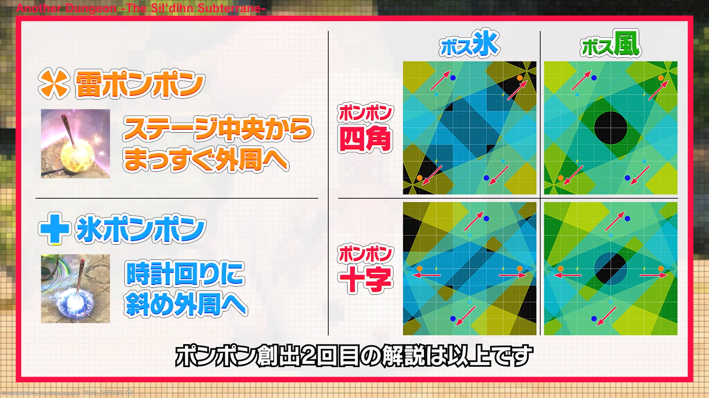
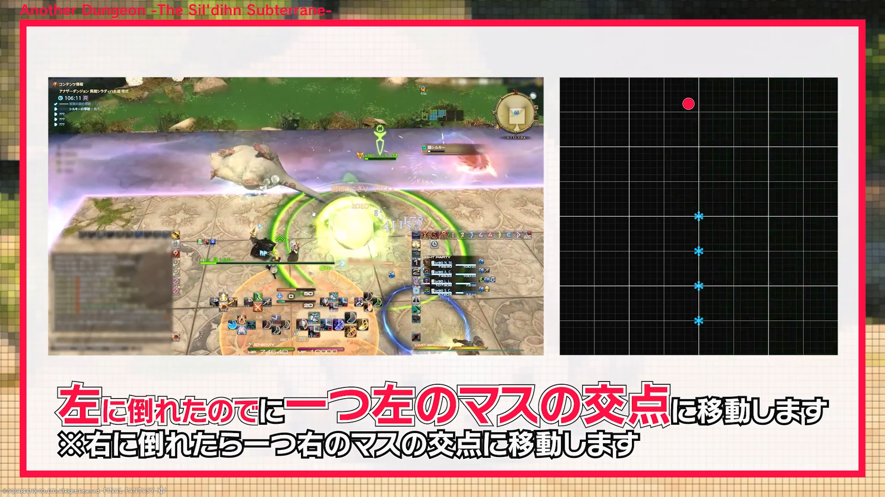
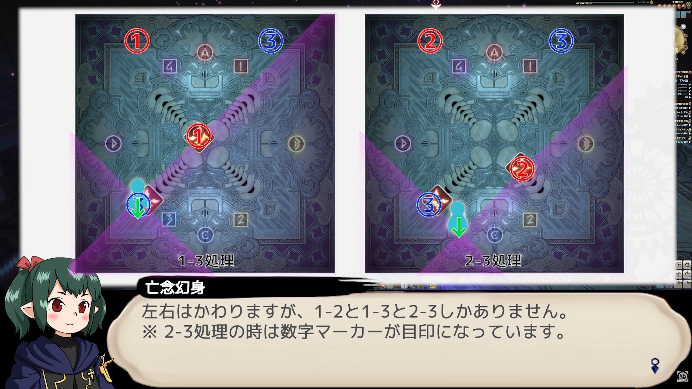
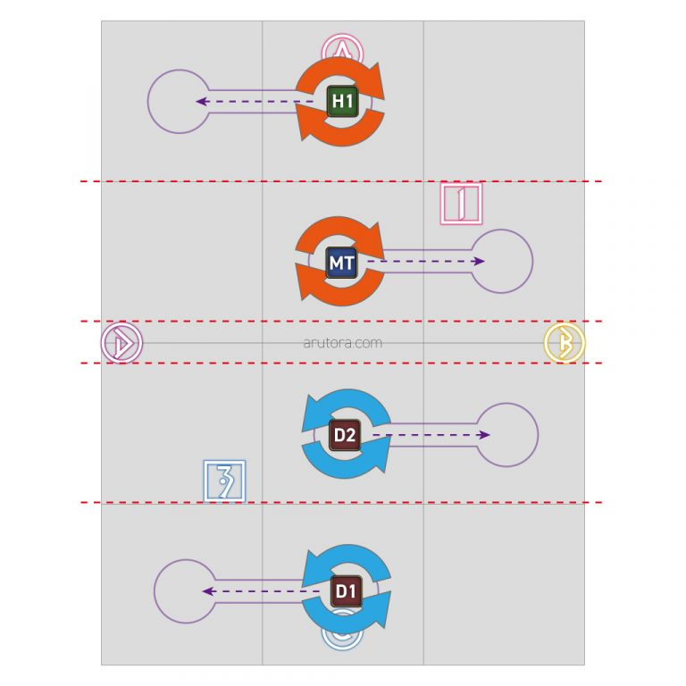
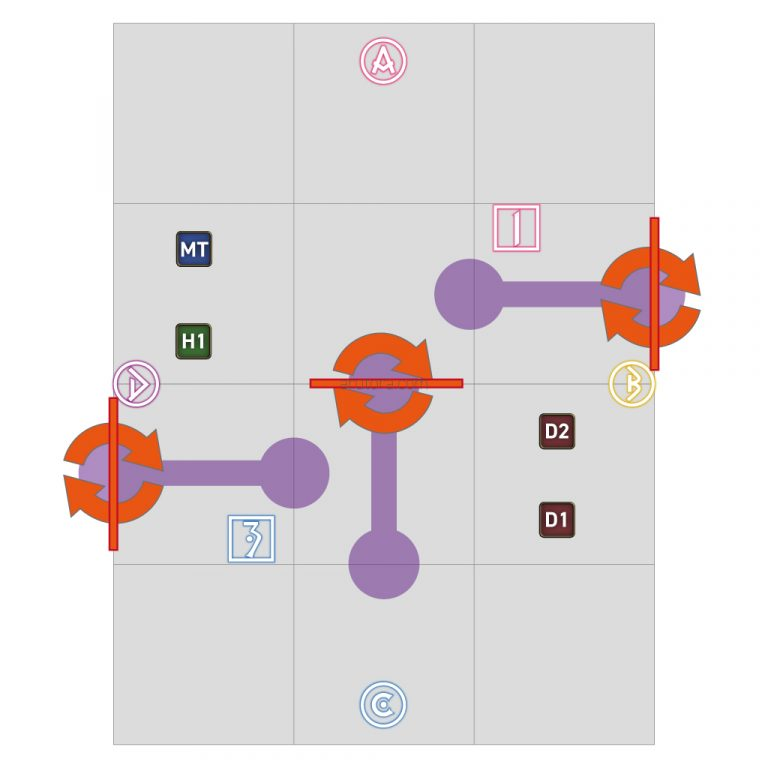
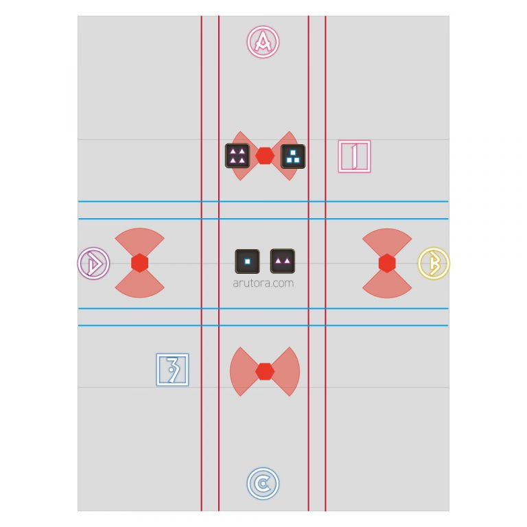

シルキー前①（単体×2）
ベラドンナ→カルク
- ベラドンナ／デラシネーター＝ヘイト1位への激強単体。零式は無敵推奨
- アトロンピンスポア＝足元集合で回避
- カルク／左方・右方薙ぎ払いは詠唱の逆側、前方扇は背面へ。交互に来る

巡回は1ボス撃破の瞬間から開始／青=デュラハン・緑=イビル開幕は雷確定。「みんなでシャンプーボム」＝本体＋場のポンポンが同時発動 → 全部の安置が重なる1点を探す。
ダストブロワー＝ノックバック、アムレン／堅実魔で無効。2回来る（リキャ間に合う）。
水洗い＝重い全体。アドル／牽制／リプライザル。
2行×4列の8個 → 壺3個が北→南へ直進し通った3列＝6個が無属性化。壺が来ない1列の2個だけ避ける。
非T1名へ直線頭割り。並び＝先頭 T ＞ 他 ＞ 対象者。
カーペットビーター＝T強攻撃。水拭き＝正面90度×2→225度。最初に倒れた側が安置、当たった玉は本体属性になる。
全員に線＋マーカー。消えると線の方向へ玉が転がる。じじー式は本体の属性に関係なく1ルール。

じじー式 公式チャート／左列=ボス氷・右列=ボス風、上段=四角・下段=十字水拭きで2個が風になり安置が消える → 頭割りで緑を1個だけ青（氷）に塗り替えて安置を作る。
前段にダストブロワー（アムレン／堅実魔）。氷4個が中央の縦一列、全員に線。

中央の縦一列／左に倒れたので一つ左のマスの交点へ（右なら右）分身2体が対角へ突進 → 前方180度 → 続けて後方180度。2体の隙間の90度が安置。

1-3処理／2-3処理 紫＝斬撃・白い隙間が安置H対象の直線頭割り。並びはボス側から T → D → H。
対象のHが最後尾にいないと死ぬ。回復も厚めに。
闘人の斬撃＝T強攻撃＋前方範囲。他は前に立たない。この後ボスを中央やや南へ。
デバフの秒数が短い方が先に発動。「頭割り＋連呪」が先か「全員散開」が先かを秒数で判断。
カウント0までに消せないと強制即死。
杖＋火球のペアが北2組・南2組。散開は北=T+H／南=DPS。
南北に赤線4本／東西に青線4本。全員に1〜4の呪印。
絶対ルール：必ず 1 → 2 → 3 → 4 の順。順番を無視するとスタン＋ワイプ。
回る予兆の後 最も近い2名へ扇。強制転移で任意移動が不可。

北から 左・右・右・左／北2人=オレンジ(時計回り)・南2人=青(反時計)／矢印＝乗る転移床最大の罠：回転しても「向き（角度）」は変わらない。床が回ってスライドするだけ。

東西2つ＋中央1つ／赤帯＝直線範囲・オレンジ＝回転。西=MT・H1／東=D2・D1東西南北に扇の杖4本＋赤青の線。ワープ床はない。線を切ると被魔法増（約8秒）→扇誘導役と線切り役を交互に交代。

杖4本の扇（蝶型）＋赤＝縦の線／青＝横の線。四角＝自分の番号。誘導は奇数=左／偶数=右